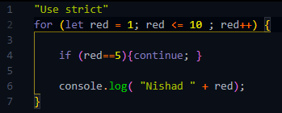
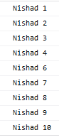
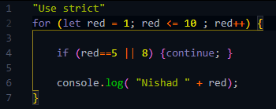
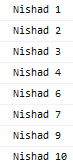
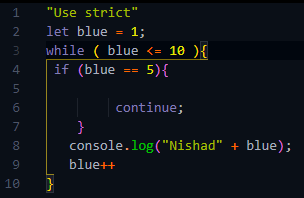
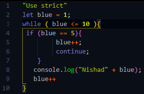

যেমন যদি আমি চাই যে loop টা 5 পর্যন্ত চলে loop থেকে বের হয়ে চলে আসুক তাহলে সে ক্ষেত্রে ব্যেবহার করা হয় break Statement ।
আর কখনো কখনো একটা loop এর নির্দিষ্ট কোন iteration বাদ দিয়ে loop টাকে complete করতে হয় তখন এই Continue Statement টার ব্যেবহার করতে হয় ।
ex:-

এখানে আমি চাইছি 5 এর iteration টা না হোক আর বাকি সব হোক
তাই এখানে 4 number লাইনে একটা
Continue Statement দেওয়া আছে
এবং এটা তার condition অনুযায়ী
অর্থাৎ red==5 হয়ে যখন statement টা true হবে
তখনি যেন loop এর এই iteration টা এখানেই শেষ হয়ে পরবর্তী iterationএ চলে যাটা ।
আর এখানে তাই হবে
যেমন প্রথমে loop টা তার মুল condition এ যাবে তারপর red = 1 হবে
তাপর red <= 10 এটা check করবে এবং true পেলে সে চলে যাবে loop bodyর ভেতর এবং 4 number লাইনের if এর condition টাকে check করবে যে red == 5 কিনা ।
যেহেতু এই মুহূর্তে বা এই iteration এর ক্ষেত্রে red এর মধ্যে 1 store করা আছে সেহেতু loop টা if এর condition থেকে false retrun পাবে এবং
তাই loop ,, if এর থেকে বের হয়ে পরবর্তী অর্থাৎ 6 number লাইনে চলে যাবে এবং function অনুযায়ী log এ তার মধ্যে থাকা ডাটা প্রিন্ট করবে ।
এভাবে 2-3-4 পর্যন্ত iteration চলবে কারন দ্বিতীয় iteration থেকে loop এর মুল condition এ আর variable assignment এর কাজ টা হবে না এটা শুধু প্রথম iteration এর ক্ষেত্রেই হবে ।
তাই loop সরাসরি 2 <= 10 চেক করবে এবং এভাবে 2-3-4 এর ক্ষেত্রে 4 number লাইনের if টা false হয়ে যাবে ।
2-3-4 এর ক্ষেত্রে if এর condition ,, false হওয়ায় if এর body run করবে না ।
এখন 5 এর ক্ষেত্রে ব্যেপারটা ভিন্ন হবে কারন যথারিতি loop তার মুল condition এ 5 <= 10 চেক করে true পেয়ে তারপর চলে যাবে if এর কাছে এবং যেহেতু এই iteration এর ক্ষেত্রে red এর value এখন 5 সেহেতু 5 == 5 . if এর condition ,, true হয়ে যাবে এবং if এর body তে থাকা continue statement টা run হবে এবার যে মুহূর্তে loop ,, continue statement পেয়ে গেল সে আর current iteration টা আর continue করবে না অর্থাৎ যখন loop ,, continue টা পেল ঐ মুহূর্তে current iteration এর জন্য loop এর নিচে থাকা কোন কিছুকেই run হতে দেবে না তাই 5 এর ক্ষেত্রে যেহেতু console.log ,, function টা execute হলনা সেহেতু console এ এই iteration এর ক্ষেত্রে কিছুই print হবে না ।
result:-

এখানে 5 number ,, iteration টা print হয়নি ।
একই যদি চাই 5 & 8 এর ক্ষেত্রে iteration না হোক তাহলে তা এভাবে logical operator এর সাহায্যে করতে পার ।
ex:-

result :-

while loop এ যখন continue operator ব্যেবহার করবো তখন একটু সতর্কতা অবলম্বন করতে হবে ।
যেমন while loop এর নিয়ম অনুযায়ী loop এর বাইরেই variable নিয়ে নিতে হবে ।
যেমন আমরা যদি loop টাকে এভাবে করি

তবে এটা একটা infinite loop এ পড়ে যাবে ।
কারন loop টা প্রথমে condition টা true পাবে তারপর if টা false পাবে
(তাই continue statement রান হবে না ।)
তারপর console.log ,, function রান হবে এবং
এর পরে 9 number লাইনে stpping এর কাজটা হয়ে যাবে ।
তারপর আবার loop এর পরবর্তী iteration গুলা চলবে 4 পর্যন্ত তারপর যখন 5 number ,, iteration এ আসবে তখন loop ,, if condition ,, true পাবে এবং continue statement রান করবে ফলে loop এর current iteration এখানেই শেষ হয়ে যাবে
তাই stapping টা আর রান হতে পারবে না ।
তো এর জন্য আবার blue এর মধ্যে পূর্বের value 5 ই থেকে যাবে এবং তাই আবার if condition ,, true হয়ে আবারও continue statement রান হবে আর এই loop টা এভাবেই চলতে থাকবে এবং এটা একটা infinite loop এ পড়ে যাবে ।
তো এই সমস্যার সমাধান করতে হলে এভাবে loop টা বানাতে হবে ।

বাকি সব আগের loop এর মতই শুধু মাত্র এখানে continue statement এর ভেতর continue; এর আগের লাইনে একটা stapping দিয়ে দিলাম ।
এতে করে যখনি if ,, true হয়ে যাবে তখন continue statement এর জন্য iteration টা শেষ হয়ে যাওয়ার আগেই stapping এর কাজ হয়ে যাবে
ফলে যেই iteration এ condition statement রান হবে সে iteration এ'ও stapping এর মাধ্যমে blue এর value 6 হয়ে যাবে ফলে loop টা infinite loop এর মধ্যে না পড়ে সঠিক ভাবেই শেষ হবে ।
continue statement এর ক্ষেত্রে for loop ব্যেবহার করাই সুবিধাজনক ।
break & continue statement কখনই tarnery operator এর সাহায্যে ব্যেবহার করা যাবে না ।